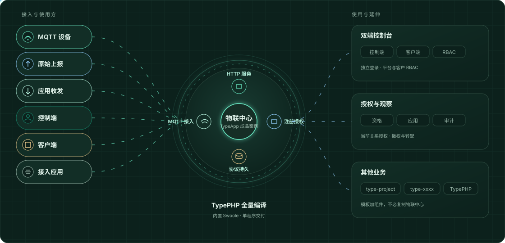

控制端
- 平台人员、角色、权限与客户工作区
- 注册资格签发、期限、额度与停用
- 设备目录、应用管理、撤权与重新分配
- 站点配置、平台审计与运行观察
同一部署，两套独立后台。控制端管理平台与客户，客户端管理自己的人员、设备和接入应用。原始消息由获授权的设备与业务系统交换。
本页描述当前开发源码架构，整批最终候选验收仍在进行。公开版本按各自发布说明和程序摘要使用；本页不改变已有 RC 的功能或验收结论。
账号域、登录会话与 RBAC 分开。控制端的跨客户管理使用明确的平台权限；客户端每次请求核对当前成员关系与租户范围。

按操作系统、CPU 和数据库 profile 选择一个程序。非系统原生库静态链接，普通启动不释放运行库；部署机无需另装 PHP、Composer、Node 或 Swoole。
首次安装同时初始化空库并生成 public/。升级替换程序后，显式更新页面，保留上传及非托管文件。日常启动只读取已安装资源。
# 已完成数据库升级后更新页面
./type-app web:install --force
./type-app serve完整首次安装参数见部署教程，已有数据库不要重复初始化。
HTTP 管理支持 SQLite、MySQL、PostgreSQL；可靠设备 MQTT 需要 PostgreSQL 严格同步后端，维护调度使用 Redis。数据库服务、TLS 证书、备份、日志及运行生成数据仍由部署者管理。
同一程序可启动多个明确角色，由监督器管理。一个程序文件不表示所有角色自动启动，也不表示运行后不产生数据文件。
Swoole 提供成熟的网络通信、协程、线程及事件循环，框架据此管理并发、截止和资源收尾，减少重复实现底层机制。它随原生程序交付，不需要在部署机安装扩展或独立 Swoole 服务。TypePHP 仍是编译核心，Swoole 不负责业务授权或持久化语义。
APP_ENV=dev/prod/demo，默认 prod。demo 保留查询、登录、退出及必要安全审计，HTTP 与命令入口分别拒绝业务写入。环境来自外置配置，修改后重启；没有单独的演示账号体系。正式和演示环境均关闭开发调试。
停服、备份和预检后，通过显式升级转换旧设备关系，保存原模型、旧任务及转换来源。无法核实身份或隔离结果的设备保持隔离；旧业务表不清空，现行后台不再开放退役处理入口。旧版本原始证据保持原身份。
物联中心是 TypeApp 的成品案例。其他应用可通过 type-project 创建工程，使用 ORM、缓存、队列、调度与通信组件；案例退出旧处理链，不影响通用组件继续提供能力。